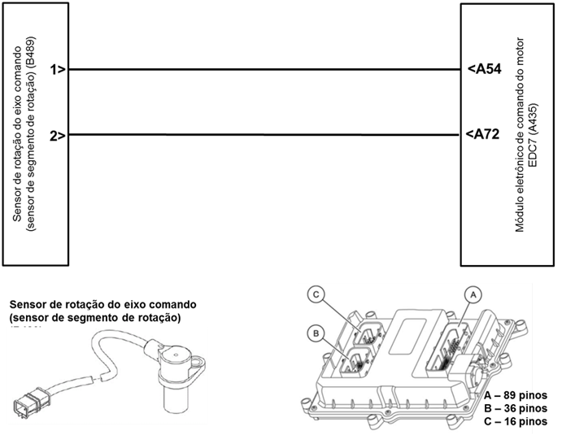
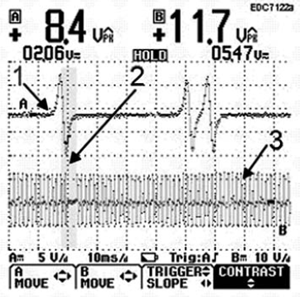
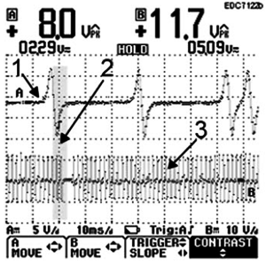

|

Descrição da Falha
Circuito do sensor
de rotação do comando de válvulas com sinal não plausível.
Indicação de Falha
Luz de alerta acende constantemente com os símbolos  e e  e ativa o alarme sonoro longo, com o veículo andando ou parado. e ativa o alarme sonoro longo, com o veículo andando ou parado.
A LIM permanece desligada.
Estratégia de Monitoramento
O módulo EDC7 monitora o sinal do sensor de rotação do comando de válvulas.
Efeito da Falha
Motor mal dá a partida.
Possíveis Falhas
FMI 1: Sinal muito alto.
FMI 3: Sinal não plausível.
FMI 4: Sem sinal.
FMI 5: Curto circuito para o massa.
FMI 6: Curto circuito para o
positivo.
FMI 8: Falha no sinal.
Aviso
  Ver também
SPN 190/01, 190/03, 190/08 e 190/09. Ver também
SPN 190/01, 190/03, 190/08 e 190/09.
Registros de Falhas em Outros
Módulos de Comando
Não.
Considerar os esquemas
elétricos do veículo
| Verificação
|
Medição |
Eliminação da
Falha |
Sensor de rotação do comando de válvulas
|
Utilize o Tester Box e consulte o manual Verificação EDC7 C32:
- Medir a resistência entre o pino A72 e o
pino A54
Valor nominal :
750 - 1100 Ω |
– Verificar a
plausibilidade do sinal e o estado da detecção da rotação com o MCO-08
– Verificar os cabos
quanto a rompimento ou oxidação
– Verificar as
conexões quanto a mau contato ou pinos tortos
– Verificar o sensor
quanto a inversão de polaridade
– Substituir o sensor
de rotação do comando de válvulas
– Verificar a
engrenagem do eixo comando (pinos para o reconhecimento estão
desalinhados, soltos ou não existem)
– Caso nenhuma falha
seja verificada, substituir o módulo EDC7
|
| Sinal de rotação |
Teste de sinal com osciloscópio
Valor nominal:
Ver curvas do osciloscópio
|
Distância entre o sensor de rotação e a roda dentada
|
Valor nominal:
0,5 - 1,5 mm
|
– Verificar se o sensor está instalado corretamente
|
Sinal do sensor de rotação
do eixo comando medido na marcha lenta entre os pinos A72 e A54
As figuras a seguir mostram os
sinais de rotação situados um sobre o outro, de modo que o deslocamento
lateral correto de fase seja reconhecido.
|
Sinal do sensor de rotação do eixo
comando e do virabrequim D08, 4 cilindros
|
Sinal do sensor de rotação do eixo comando e do virabrequim D08, 6 cilindros
|
 |  |
1 Sensor de
rotação do eixo comando
2 Sincronização
3 Sensor de
rotação do virabrequim
Aviso: Atentar à
sincronização entre o sensor de rotação do eixo comando e o do
virabrequim. Um ajuste incorreto do rotor do sensor do eixo comando
para o virabrequim pode ser reconhecido através desta concordância de
sinais.
Tester Box

|